深圳八月夏
是的我在10月底发8月的内容
深圳湾体育中心春茧体育馆，骑10分钟自行车就能到海边。春茧很大很漂亮，来到这里有一种近乎朝圣的情绪，难以用言语表达。
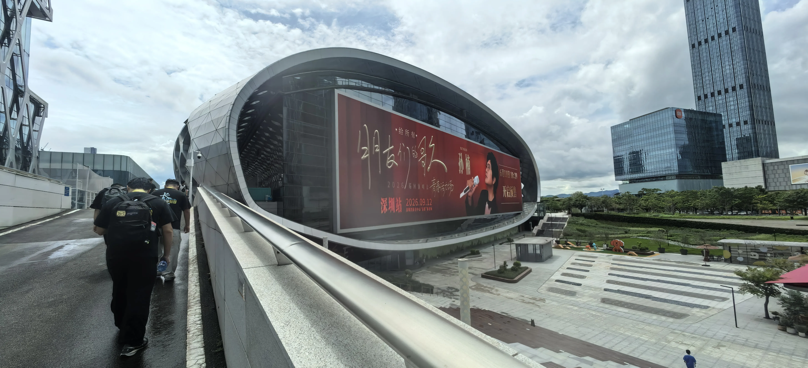
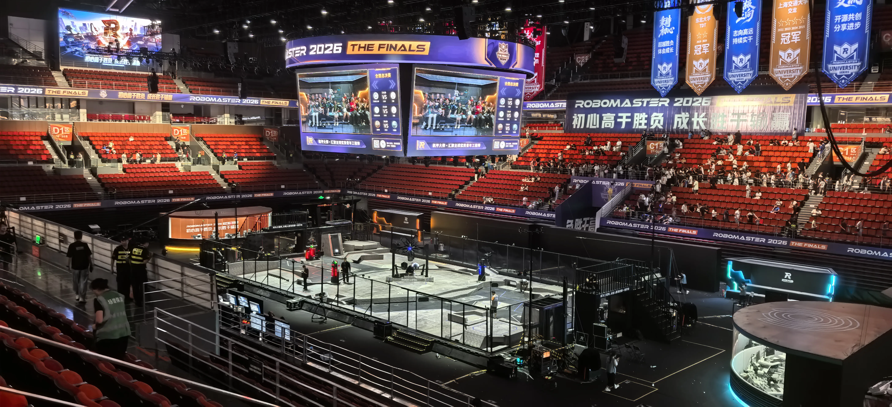
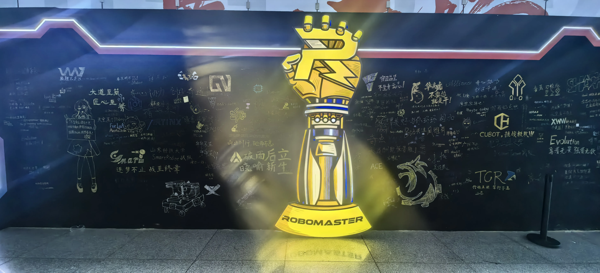
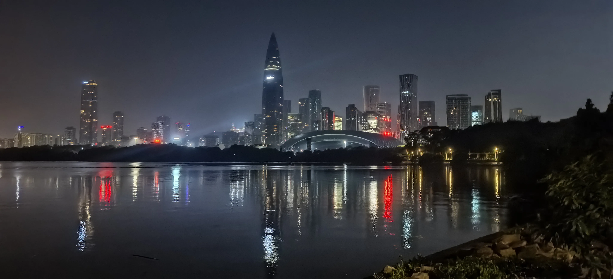
八月是难以找到的梦，梦醒怅然若失。
深圳的八月带着南方海边城市的湿热，但并不难以接受，比长沙的闷热潮湿好一点。
深圳确实是大城市。高楼大厦似乎有一种疏离感，密集又有些空旷，一个人会有些惶然无措。
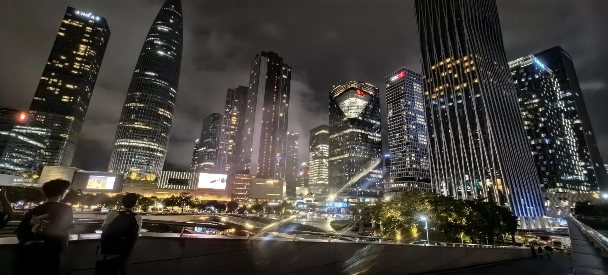
回家时第一次一个人坐飞机。飞机好大。飞机票好贵。飞机餐没吃饱。
参加了青工会，茶歇也好吃，晚宴也好吃，学术蝗虫
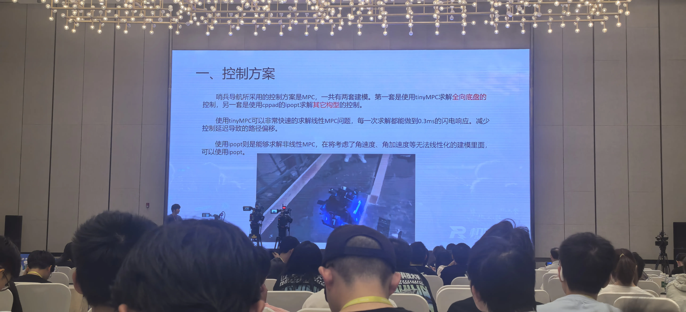
参加了RM2027亮点发布会，参观了天空之城，中午依旧学术蝗虫，披萨好吃。
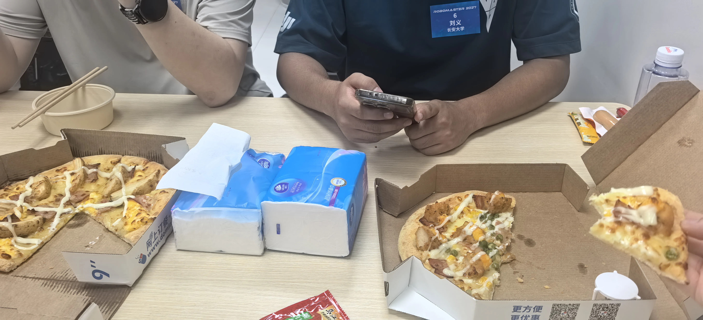
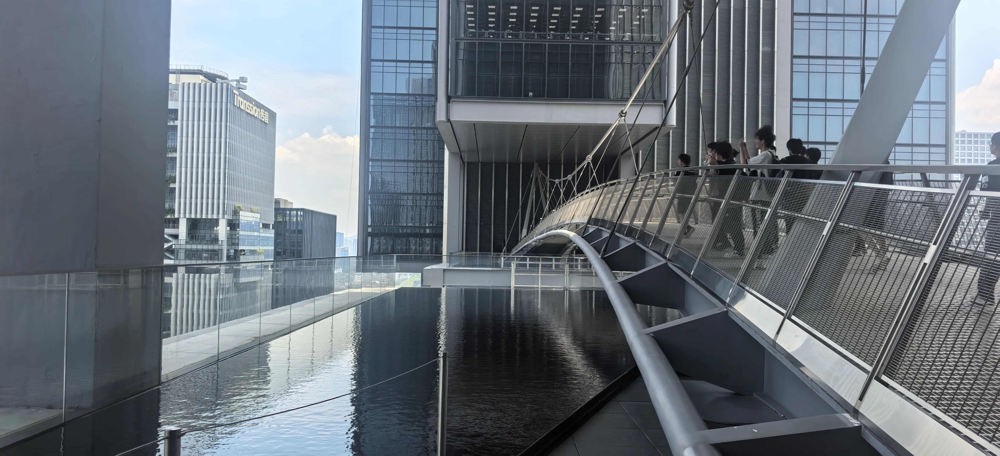
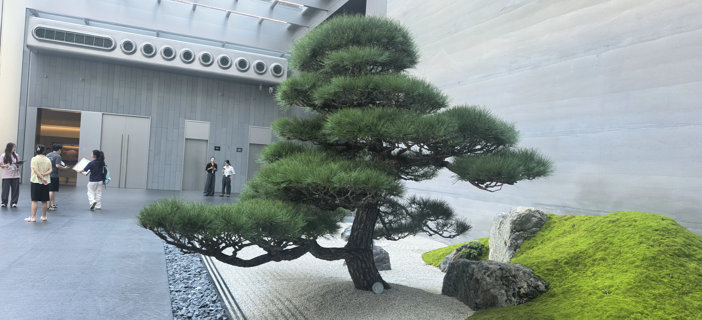
据说这颗树180w，大概有风水作用（）
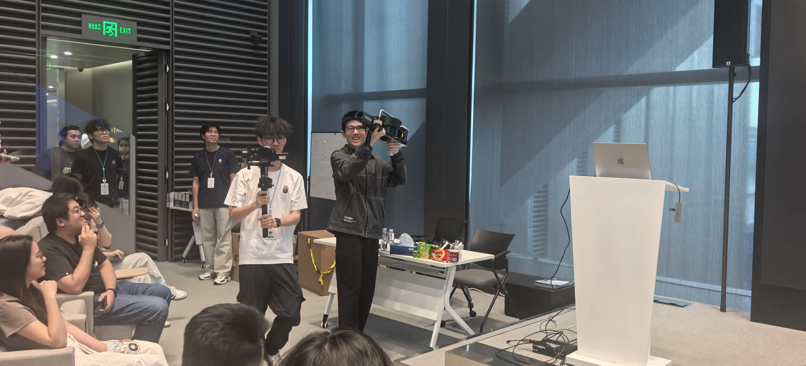
深圳湾海岸有很长的绿道，非常方便骑车。西北岸就是南山区，春茧就在最里的位置。
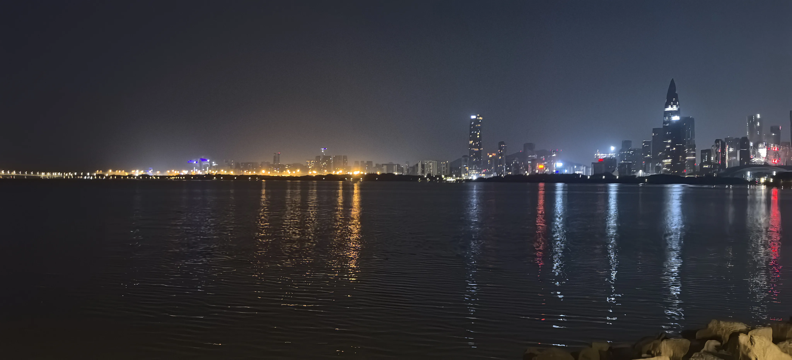
深圳湾大桥在海中点下一串，静静地包裹了的海的夜晚。海水很浅，没有金色的沙滩，都是石头。水打在石头上，簌簌地把风送过沿海的树的叶，却显得更安静了。绿道上时不时会走过几个路人。
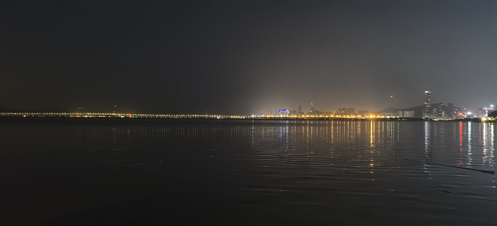
东边是福田区，同样高楼耸立着的。再南边似乎是香港。福田区的海岸是一片红树林。在海岸遇到了骑自行车巡逻的武警和哨塔，应该是防止偷渡。这个位置可以看到整个海面。
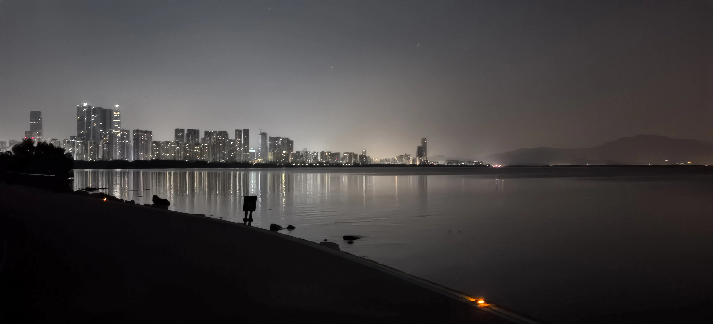

路过了深圳大学香港医院和国家会展中心，国家会展中心有江泽民主席题字。
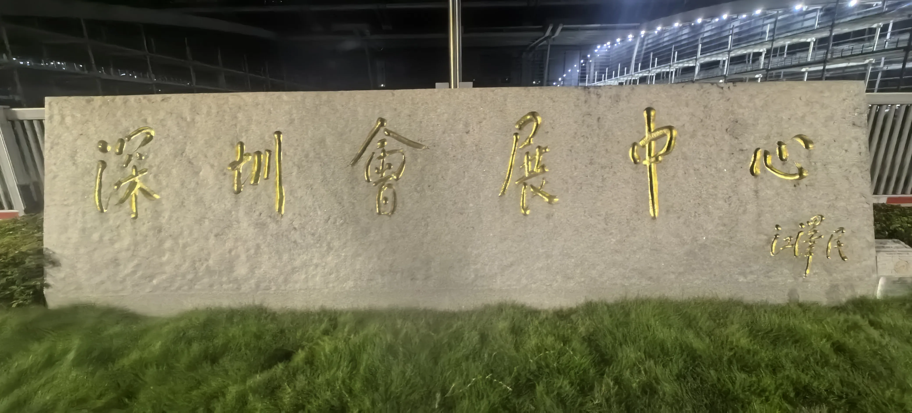
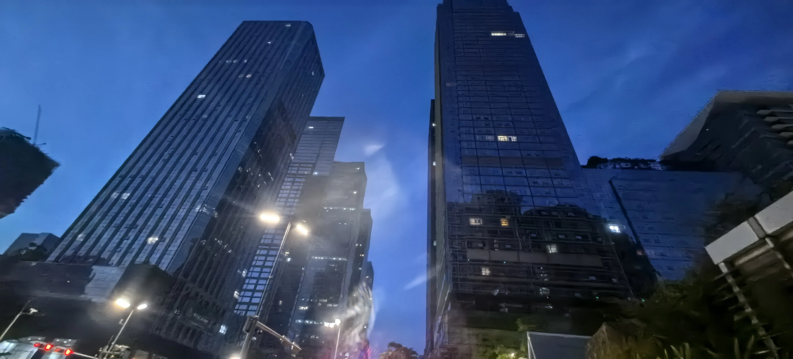
凌晨吃了肠粉，可惜似乎可能不是很不正宗？
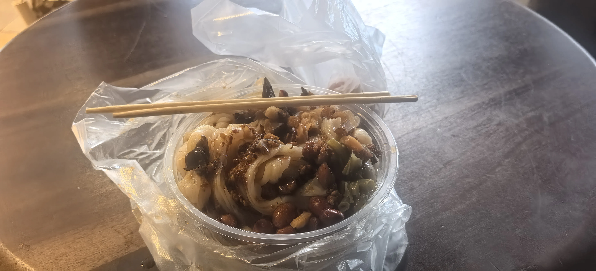
啊啊啊晚上在海岸一个人骑车到凌晨好青春啊啊啊啊。
大学生活的一半在RM中结束了。其实想说点什么，却言语匮乏、难以表怀。
我写不出那些异彩纷呈的文字，也没有太多富有哲理的论述。真意难名，欲辩忘言。人们总说触景生情，所以我放了好多照片。
2026-10-20T21:45:06